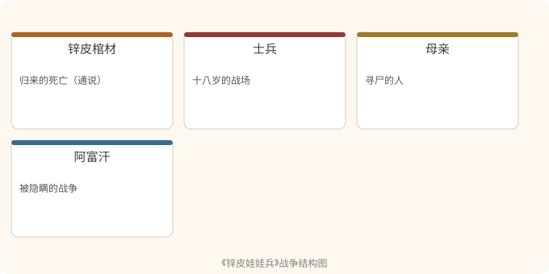

锌皮娃娃兵
一、基本信息
| 作者 | 斯韦特兰娜·阿列克谢耶维奇 |
|---|---|
| 成书/出版 | 1990年（作者页 B253 口径：Zinky Boys (1990)） Svetlana Alexievich — Encyclopaedia Britannica（百科全书） |
| 国别/地区 | 白俄罗斯 |
| 时代 | 现当代 · 20世纪 |
| 体裁 | 口述实录 |
| 语言 | 俄语 |

《锌皮娃娃兵》战争结构图（主题·结构图）
二、创作背景
作者页（B253）：阿列克谢耶维奇 works 载'Zinky Boys (1990)'——阿富汗战争苏联士兵的口述（B253 作者页定位）。
'锌皮'：阵亡者以锌皮棺材运回（书名通说待核）。
三、内容脉络
士兵、母亲、寡妇的三重独白：阿富汗战争（1979—89）（通说待核）。
四、主要人物表
| 人物 | 身份 | 说明 |
|---|---|---|
| 士兵与母亲 | 口述者 | （通说待核） |
五、主题与艺术特点
- 被隐瞒的战争（通说）。
- '锌皮棺材'：归来的死亡（书名通说待核）。
- 母亲的声音（通说）。
六、影响与评论
- 作者页：阿列克谢耶维奇作品谱系（B253 作者页口径）。
Svetlana Alexievich — Encyclopaedia Britannica（百科全书） - 作者页：2015年诺奖授奖词（B253）。
Svetlana Alexievich — Encyclopaedia Britannica（百科全书）
七、阅读建议
难点
- 阿富汗战争史。
- 口述的道德重量。
- 《锌皮娃娃兵》（高莽译本？——通说待核）。
- 俄文原版。
阿列克谢耶维奇战 Trilogy 之一。
八、待核实
- 1990年出版与禁书风波核对。
- 高莽译本信息待核。
- 三重独白结构核对。